Con la inauguración de la nueva sede del Teatre Lliure en Montjuïc , el 22 de noviembre próximo , el Fòrum será el único edificio pendiente de los previstos en el proyecto de la Ciutat del Teatre que el Ayuntamiento de Barcelona encargó al director Lluís Pasqual.
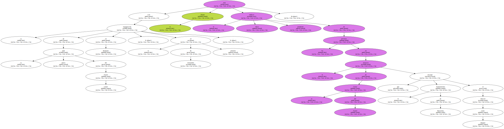El primer paso para completar el plan es el programa de usos del Fòrum , en fase de estudio y que deberán aprobar los responsables municipales y los de la Diputación.
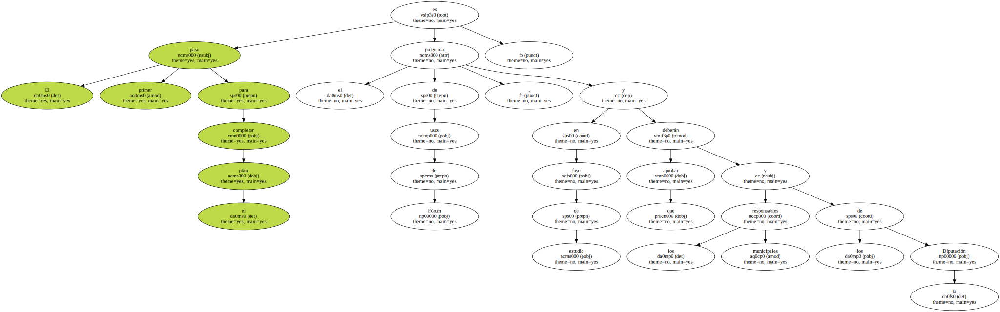De momento , el edificio es una simple propuesta , sin concreción urbanística ni de utilización , y cuya construcción está vinculada a la demolición de unas 80 viviendas que se levantan justo en el espacio que deberá ocupar.
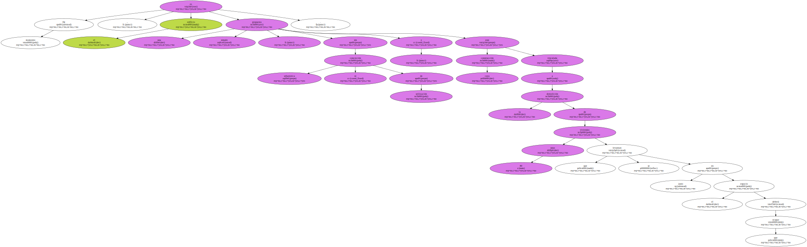En enero , aproximadamente , el programa de usos redactado por Josep Montanyés , actual director del Teatre Lliure y coordinador de la puesta en marcha de la Ciutat del Teatre , pasará a ser un texto definitivo y se sabrá entonces para qué servirá el edificio y qué funciones deberá cubrir.
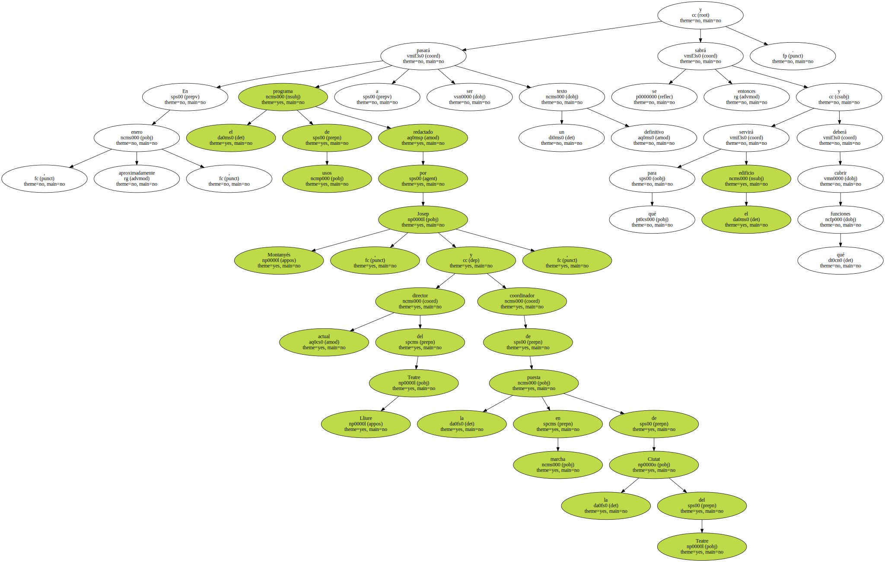A falta de esa aprobación definitiva , parece probable que acoja espacios que faciliten la creación teatral y ensayos.
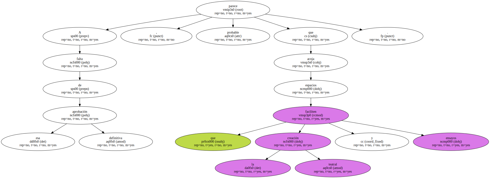Salvo cambios de última hora , no se incorporarán más escenarios abiertos al público.
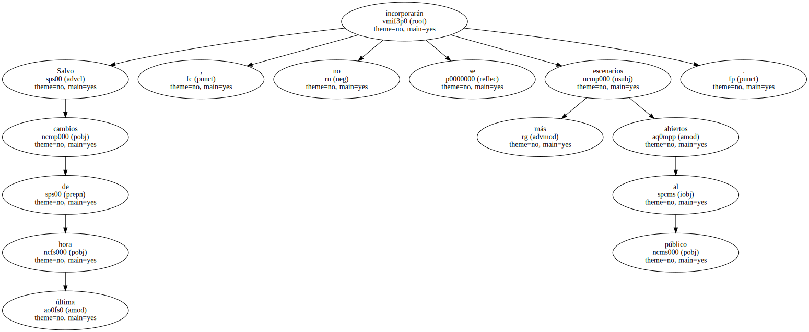El proyecto redactado por Lluís Pasqual en noviembre de 1999 señalaba que el Fòrum debía disponer de un museo del espectáculo y de una sala para títeres y marionetas.
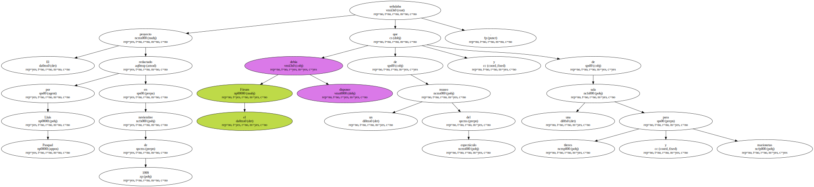La idea del Fòrum nació ( sin este nombre ) más como una propuesta urbanística que como una necesidad teatral.
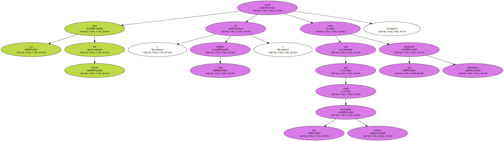Fue pintado por primera vez en los planos por los técnicos municipales casi como una exigencia del diseño del conjunto de la Ciutat del Teatre , para cerrar la plaza de Margarida Xirgu que circundan el Mercat de les Flors , el Teatre Lliure ( Palau de l'Agricultura ) , el Institut del Teatre y unas 80 viviendas construidas hace 50 años , pero en un estado de conservación aceptable.
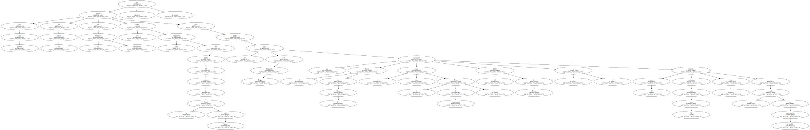El cambio de actividad en el entorno inmediato de estos pisos , con una actividad teatral muy intensa ( cuatro salas ) y unos horarios no siempre cómodos para los vecinos , ha hecho poco menos que incompatible la proximidad de viviendas y teatros.
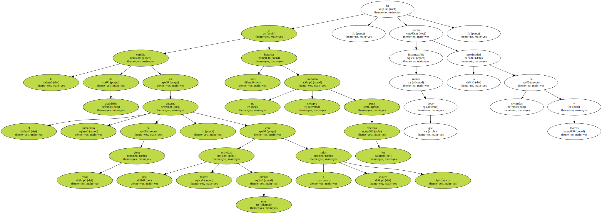La construcción del Fòrum exigirá primero la demolición de los 80 pisos y la colocación de los vecinos en nuevas viviendas que se están construyendo muy cerca , detrás del Mercat de les Flors , operación que no se acabará antes de dos años.
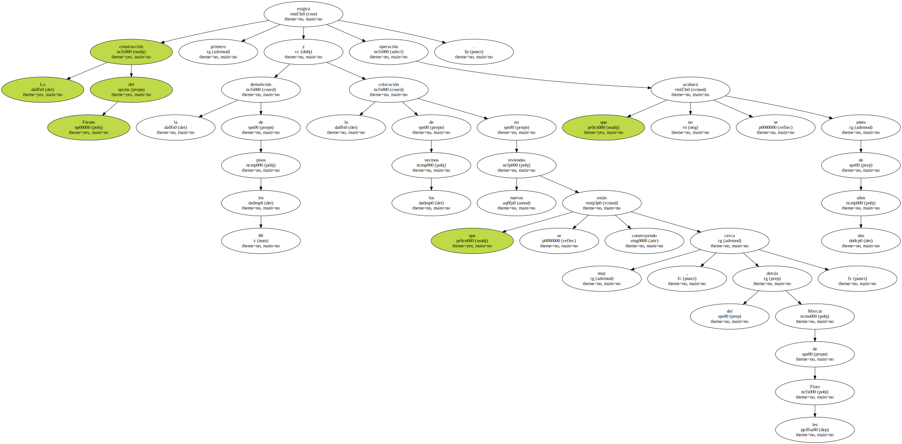El edificio previsto por Lluís Pasqual tenía unas dimensiones que no parece probable que puedan llevarse a la práctica.
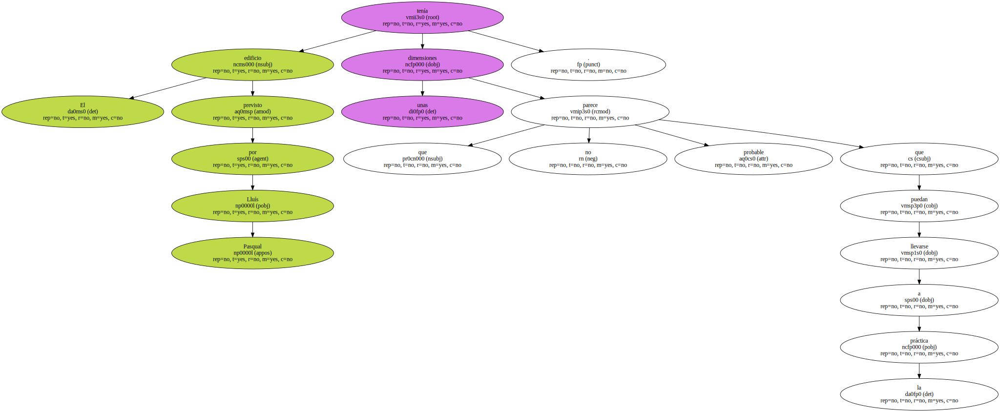Los 20.000 metros cuadrados fijados por el director teatral en 1999 quedarán reducidos finalmente a unos 8.000 , máxima edificabilidad que permite el plan especial de urbanismo aprobado para la Ciutat del Teatre.

Del proyecto presentado en su momento quedan aún dos piezas pendientes de realización , las dos relacionadas con la movilidad que exigirán los más de 2.000 espectadores que pueden coincidir en el recinto de la Ciutat del Teatre , más otros 2.500 del próximo Barcelona Teatre Musical ( actual Palau d'Esports ) que se inaugurará en noviembre.
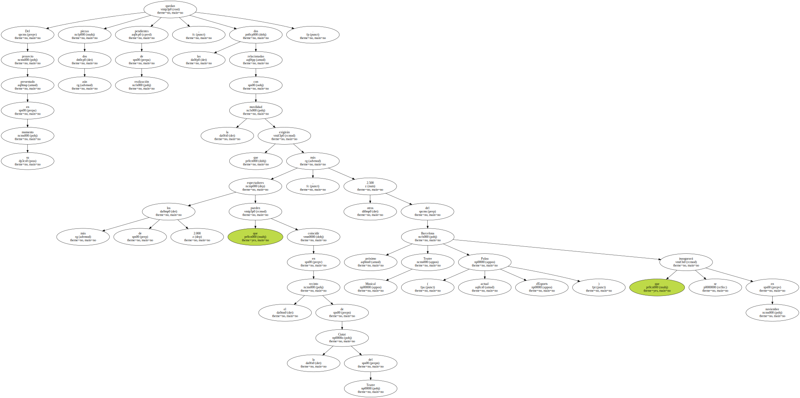El plan inicial incluía una nueva boca de metro de la estación de Poble Sec de la línea 3 , en la confluencia de las calles Mare de Déu del Remei y Bòbila y la construcción de un aparcamiento subterráneo.
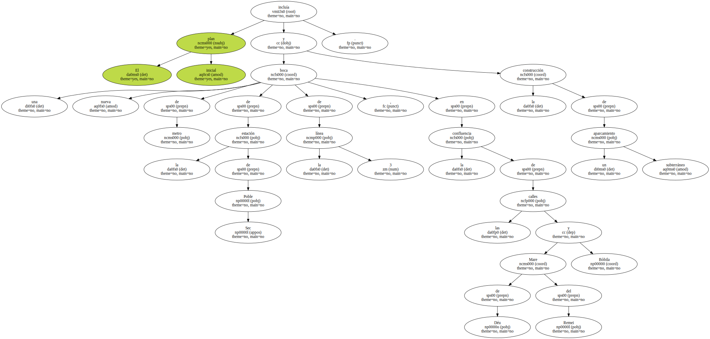Las obras de este último están vinculadas al derribo de las 80 viviendas , pero la boca del metro ni existe ni se la espera , ya que ni siquiera figura en el Plan Director de Infraestructuras ( PDI ) aprobado recientemente.
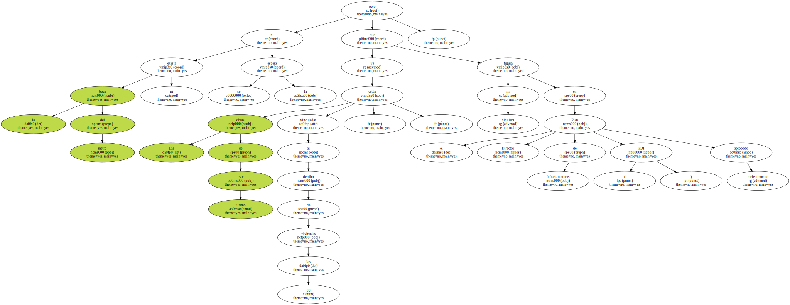